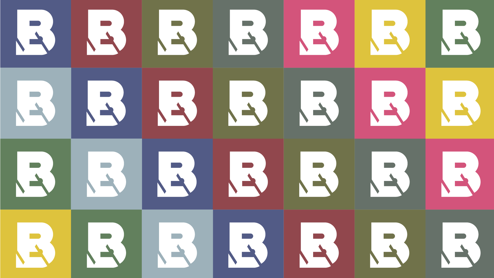
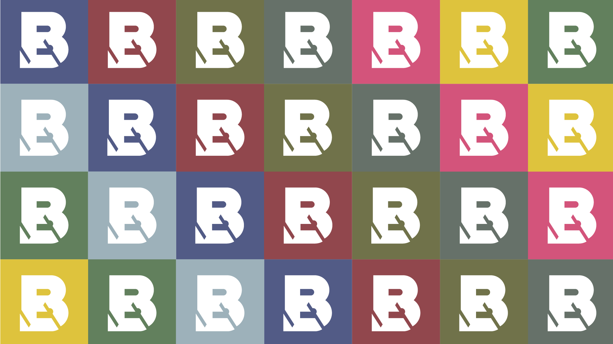

About me
Estudiante de Diseño de Medios Interactivos con intereses, competencias y experiencia en motion graphics, branding, community management y realización y corrección de trabajos escritos; además, un apasionado por la innovación, con capacidades para liderar talleres en ésta área con el capital humano como eje.
Su principal pasión es la preproducción de todo tipo de proyectos de diseño y la creación editorial en general, desde ensayos filosóficos hasta cuentos infantiles.
Branding
Producción Literaria
Community Management
Ilustración Digital
Producción de Audio
Investigación

¿Autorretratos?
Proyecto Personal
La deformación craneal fue una practica recurrente entre las mas
altas esferas de las comunidades precolombinas, intentaban parecerse
a sus dioses o a los fuertes animales con que luchaban día a día.
Teniendo como inspiración esa práctica usada por los aborígenes y
herramientas digitales, han surgido autrretratos mas reales que una
simple foto.
 

Broken Window
Cliente: Nelson Rodriguez
Este proyecto fue recibido desde su fase primigenia, cuando
nisiquiera contaba con un nombre; esa fue la primera meta a vencer.
Se impartió un taller de creatividad con algunos socios del naciente
negocio, con base en lluvias de ideas se encontraron problemáticas del medio,
influencias, valores a proyectar y demás factores necesarios para lograr
una solida base teórica antes de buscar plasmar algo gráficamente
Basado en la Teoría de las Ventanas Rotas de Kelling y Wilson nació el nombre
que busca evangelizar con un alto sentido del diseño en sus prendas.
El Logosímbolo logra ser una pieza sólida y monocromática, para lograr la
máxima versatilidad y escalabilidad posible.
Jingle Owies
Cliente: Avena Owies
Con el estilo tradicional de los jingles, la composición se
realizó buscando lograr un ritmo pegadizo, con acordes sencillos
y un call to action al final.
Se utilizaron unicamente tres acordes mayores para lograr un resultado
sencillo que permitiera lograr una melodia plana, en la letra se trató de
resaltar los valores del producto que son: su origen natural y la portabilidad
del producto
Voice Over
Cliente: AppFiesta S.A.S
Buscando estar acorde al público de la aplicación, se buscó una voz juvenil
con un tono alegre.
La voz en crudo se procesó en computador para lograr pulir detalles y
otorgar mas limpieza al sonido; se utilizaron filtros de reducción de
ruido, "deeser" para suprimir el sonido al pronunciar la letra 'S' y
ajustes en el pitch general.